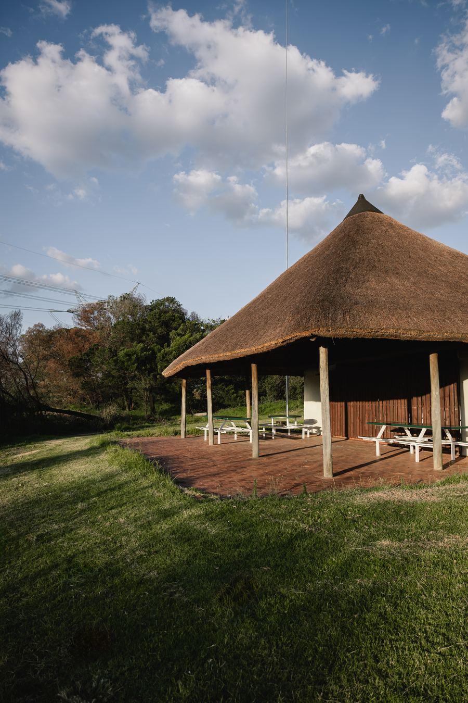
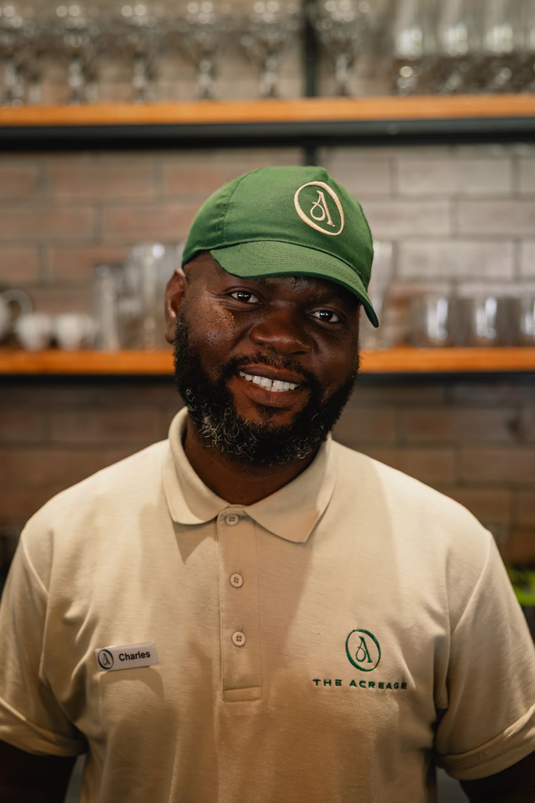

Restaurant
Breakfast, All Day
Breakfast served until the kitchen closes is something nobody else nearby offers. One dish and its price per slide, so people know exactly what they're coming for.
Carousels, most TuesdaysHow The Acreage shows up on Instagram, Facebook and TikTok for the rest of the year: what we post, when, and why. Everything here is built from your own brand shoot and drone footage, priced from the new menu, and set in the same type as the new website.
Leave a note on anything you'd change. Press Leave a note at the top of the screen, then click the part you mean.
The restaurant and the venue sell to different people on different timelines. We keep them in one feed but plan, measure and advertise them separately.
A decision made the night before or that morning, usually over WhatsApp, by someone who lives or works within about twenty kilometres. This is breakfast, lunch, the bar and the weekend.
Year-end functions, team days, weddings and milestone birthdays. Decided over weeks by someone comparing three or four venues, so they need to see the spaces and the numbers.
The two jobs feed each other. The family who comes for breakfast in October is walking past the lapa and the lawns, and that is often how a wedding or a year-end function starts. So every restaurant post is also a quiet venue viewing.
Where most of your guests and most event bookers actually are, especially over thirty-five. It also carries the adverts and the local community groups.
Where the place looks its best, and where people check you out before they book. The grid has to look like somewhere worth the drive.
Every Reel goes to TikTok too, unchanged. No dances and no trends, just the same video in a second place. We'll judge it at the end of the year.
Audience figures from DataReportal, Digital 2026: South Africa. The same post goes to Facebook and Instagram; only the Reels also go to TikTok.
Every post belongs to one of these, so nobody has to sit and wonder what to put up. Each one has a day and a source of pictures.
Breakfast served until the kitchen closes is something nobody else nearby offers. One dish and its price per slide, so people know exactly what they're coming for.
Carousels, most Tuesdays
Burgers, ribs, the sharing platter, cocktails, G&T on tap and wine by the glass. Always with the price, because a named dish with a price is what gets people in the car.
Tuesdays and Saturdays
One space at a time, with its name and how many it holds. Year-end functions and team days now, weddings and celebrations from January. Never conferences.
Thursdays
The lawns, the trees and the late light. The drone footage lives here. These Reels make the case that this is somewhere you come and stay for the afternoon.
Saturday Reels
Stories on the days that matter: the Open Day, a match day, the competition draw, a full lawn on a sunny Saturday. You send us a few phone photos or clips on WhatsApp and we post them.
Now and then, not daily
The team, a table laughing, a dog under a chair. The brand shoot is almost all places and plates, and faces are what stop people scrolling. This is the one that needs new photos.
When we have themThree or four feed posts a week, on the same days each week, so the page looks active without anyone having to post daily. Kept up for three months, that does far more than a busy fortnight followed by silence.
Now and then a post for companies, like Corporate Mondays.
A dish or the breakfast menu, for the week ahead.
A fourth post when there's news: the competition, an event, an announcement.
A venue post at lunchtime, when planners are at their desks.
Replies to messages and comments.
The strongest post of the week, on the busiest day.
A Story only if something's on.
Format figures from Socialinsider's 2025 benchmarks across 35 million Instagram and 25 million Facebook posts. Story reach figures are published by the platforms' partners and are a guide only.
| When | What | Status |
|---|---|---|
| Tuesday 13 October | An email and a WhatsApp message to past clients: the Open Day, year-end dates and Corporate Mondays. | Ready |
| 21 October to 1 November | Competition: like, follow and tag to win breakfast for four. Built to grow followers before the Open Day. | Prize to confirm |
| From Monday 26 October | Corporate Mondays: a business breakfast for a team of 10 to 30, with the restaurant to themselves. | Price to confirm |
| Thursday 29 October | Open Day for past clients, event planners and a few TikTok creators: a tour of the estate, then a buffet breakfast on us. Invitations go out on 13 October. The full plan and messages. | Times to confirm |
| October and November | Year-end functions and team days. Every Thursday post points at a space with a date still open. | Ready |
| Thursday 19 November | Christmas Day lunch goes on sale, paid in advance. | Are you open on the 25th? |
| November | Three Springbok tests on the big screen: Italy on 7 November, France on the 13th, Ireland on the 21st. See the ideas page. | Screening and hours |
| Thursday 26 November | Our proposal: gift vouchers for Black Friday and Christmas, without a discount. | Needs your OK |
| From 9 December | School holidays: the kiddies menu and the lawn. | Milkshakes still on? |
| Once approved | The events on the offers sheet (Estate Wednesdays, Sundowners, The Long Table, House at The Acreage). Each gets an announcement three weeks out, then a reminder. | Waiting on prices |
The best breakfast and weekend posts, shown to people within about twenty kilometres. This includes the advert we spoke about for mums planning a child's birthday party.
The spaces posts and the Open Day, shown to people planning year-end functions and team days across Gauteng, with enquiries going straight to the events team.
Each post we suggest boosting is marked Boost on the posts page, with the audience it would be shown to. We only put money behind posts that have already done well without it, and the two are measured separately, because an enquiry worth paying for on a wedding would be far too expensive for a table of four.
All 27 posts, from 13 October to 8 December, numbered, with the captions, the photos and the questions that go with them.
See the postsWant more variety? Twenty-six more ideas to choose from, including the Springbok tests and guest reviews. And the email and WhatsApp messages for past clients.